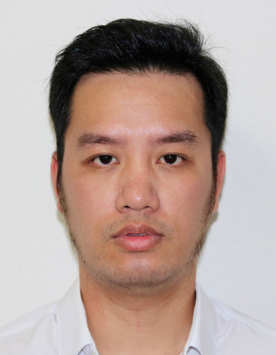

Ph.D. Thuong D. HOANG

Diploma in Physics of the Universe at Paris University
Born: April 12, 1989
Nationality: Vietnam
Email: hoang416@umn.edu
Address: School of Physics and Astronomy, University of Minnesota, Physics and Nanotechnology Building, 115 Union St SE, Minneapolis, MN 55455, USA.
Website: https://hoangducthuong.github.io.
Postdoct (2023-present)
School of Physics and Astronomy, University of Minnesota (UMN), USA.
Postdoct (2021-2023)
Kavli Institute for the Physics and Mathematics of the Universe (Kavli IPMU), The University of Tokyo, Japan
Lecturer/researcher (January 2021 - October 2022)
Department of Space and Applications - University of Science and Technology of Hanoi (USTH)-Vietnam
Teaching modules: Basic Programming (C); Data Analysis & Visualization (Python); Modern cosmology; Advanced electronic system (practical)
Postdoctoral scholar (2019-2020)
Cornell University - United States
Ph.D. in Physics of the Universe (2015-2018)
AstroParticle and Cosmology laboratory, Paris University-France
Title: Optimization of future projects for the measurement of Cosmic Microwave Background polarization. (Bandpass filters mismatch systematic effect for LiteBird satellite & Interaction of particles with 256 superconducting Transition Edge Sensors array of QUBIC ground-based experiment). Supervisors: Assoc. Prof. Guillaume Patanchon. [dissertation]
My initiative: 1st Meeting of Young Vietnamese Community of Astronomy (YVCA), APC laboratory, Paris Diderot University (21-22 December 2017 Paris-France).
Master Space Science & Applications (2012-2014)
Double-Diploma: Observatoire de Paris and University of Science and Technology of Hanoi (USTH).
3/2014 - 9/2014: Master thesis: Cosmic ray interaction with Planck satellite detectors for the measurement of the Cosmic Microwave Background (CMB) radiation polarization with Assoc. Prof. Guillaume Patanchon at the APC laboratory.
4th - 10th 8/2013: Participation to the Rencontres du Viet Nam-Vietnam School of Physics on Astrophysics and Cosmology.
Electrical Engineering (2007-2012)
Hanoi University of Science and Technology (HUST), School of electrical engineering. Diploma: Degree of Engineer in Control and Automation Engineering.
2011 - 2012: Lab work: ABB - HUST training center (teamleader). ABB is a global group in power and automation technologies.
High School: Hai Phong-Vietnam (2004-2007)
The 1st ranked student in Maths, Physics, and Chemistry.
English: Fluent
French: Intermediate
Japanese: Beginner
Vietnamese: Native
Simulation of physical processes/ Data analysis.
Electronic, mechanical, thermal, and optical experiences ( ElecMecTherOpt ).
Python (Advanced), C/C++ (intermediate), Bash shell (Basic).
TOAST-Time Ordered Astrophysics Scalable Tools (intermediate)
Matlab (Intermediate).
OrCAD/Altium Designer (Intermediate), Labview (Basics).
Layout Editor / Klayout (Basic).
Root (Basic).
Solidwork (Advanced), Catia v5/ v6 (Intermediate), ANSYS (Basic), AutoCAD (Intermediate).
Latex (Advanced), Github (Advanced).
Window/Linux/Mac OS (Advanced), Microsoft Office/Open Office/Keynote (Advanced).
Adobe Photoshop/Lightroom/Premiere (Intermediate).
WordPress/HTML/CSS/Java script (Intermediate).
Photography (Intermediate), caligraphy (Basic), guitar player (Intermediate).
Ping-pong/badminton (Intermediate).
Astronomy facebook fanpage (≈ 12000 likers): https://www.facebook.com/thienvanhoc.org/
Google Scholar: https://scholar.google.com/citations?user=X6_u9x0AAAAJ&hl=en